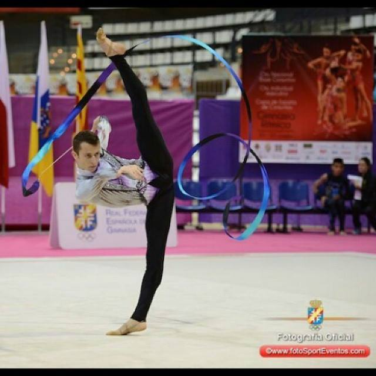
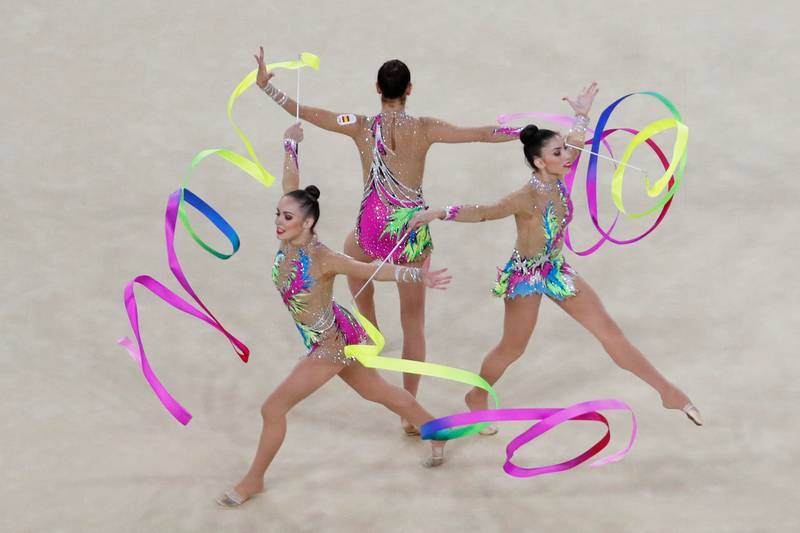
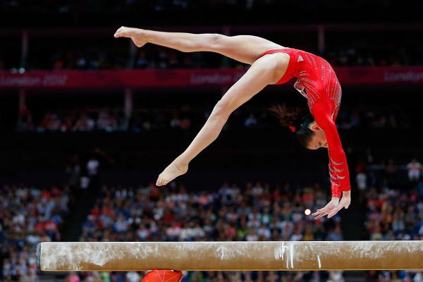
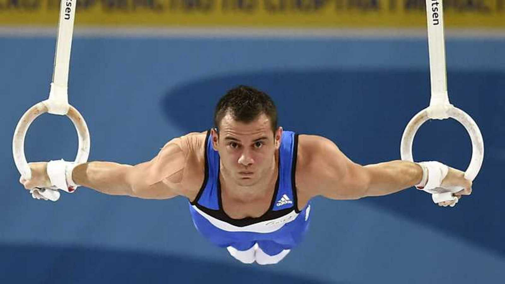

TIPOS DE GIMNASIA
GIMNASIA RITMICA
La gimnasia rítmica es una disciplina deportiva que combina elementos de ballet, gimnasia y danza así como el uso de diversos aparatos como la cuerda, el aro, la pelota, las mazas y la cinta.
En este deporte se realizan tanto competiciones como exhibiciones en las que la gimnasta se acompaña de música para mantener un ritmo en sus movimientos, realizando un montaje con o sin aparato. La gimnasia rítmica desarrolla la armonia, la gracia y la belleza mediante movimientos creativos, traducidos en expresiones personales a través de la combinación musical, teatral y técnica, que transmite, principalmente, satisfacción estetica a los espectadores. Practicada principalmente por mujeres, en los últimos años está aumentando el número de practicantes masculinos. Las pruebas se realizan sobre un tapiz y la duración de los ejercicios es de aproximadamente 90 segundos en la modalidad individual y de 150 en la de conjuntos. Al igual que otras disciplinas de la gimnasia, tiene sus antecedentes en los estudios de Roussseau, transformándose con el paso de los años siempre ligada a la danza y la musicalidad, hasta llegar a la década de 1930, cuando en la Unión Soviética comienza a practicarse como deporte y empiezan en Alemania a introducirse los aparatos que hoy conocemos.

GIMNASIA ARTISTICA
La gimnasia artística es una disciplina de la gimnasia. El dicionario de la lengua española define a la gimnasia artística como "Especialidad gimnástica que se practica con diversos aparatos, como el potro o las anillas, o bien sin ellos sobre una superficie de medidas reglamentarias"
Históricamente, como una forma de ejercicio físico, la gimnasia surgió en la antigüedad. A partir del siglo XIX, la gimnasia artística se independizó de la gimnasia general,tras la creación, en 1881, de la federacion europea de la gimnasia. Más tarde, en Atenas 1896, se convirtió en deporte olimpicopracticado únicamente por hombres. Ya en los juegos olimpicos de Amsterdam en 1928 se permitió participar a las mujeres. A partir de mediados del siglo XX, esta disciplina comenzó a practicarse de la manera que se conoce actualmente.
Las presentaciones en la gimnasia artística son generalmente individuales y tienen una duración promedio de entre treinta y noventa segundos, se realizan en diferentes aparatos y se dividen en competiciones masculinas y femeninas. Los aparatos empleados en categoría femenina son barras asimetricas, barra de equilibrio, suelo y salto de potro , mientras que en la categoría masculina son anillos,barra fija, caballo con arcos, barras paralelas,salto de potro y suelo.
